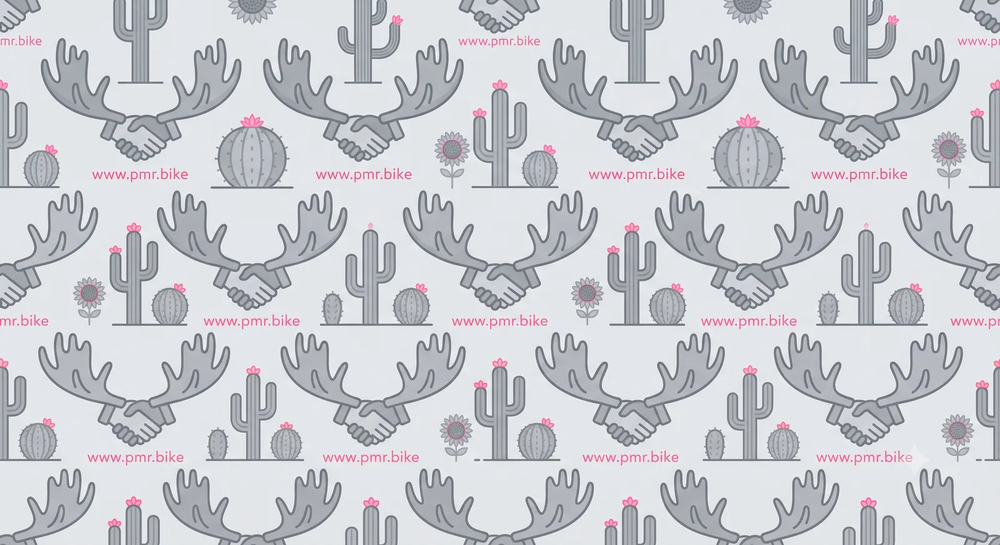

A working directory of nonprofit mountain bike trail advocacy organizations in the United States.
© 2026 Post Millennium Renaissance · postmillenniumrenaissance.com · Free for noncommercial use under PolyForm Noncommercial 1.0.0. Source studies remain the property of their authors.